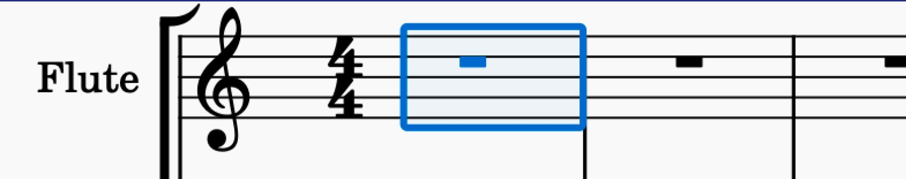
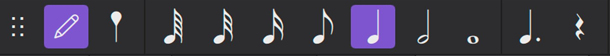
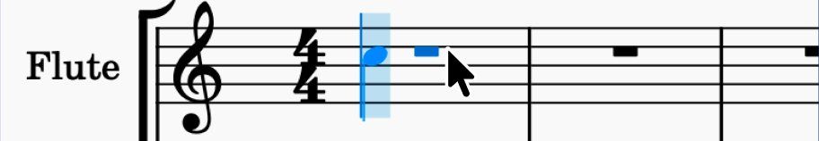
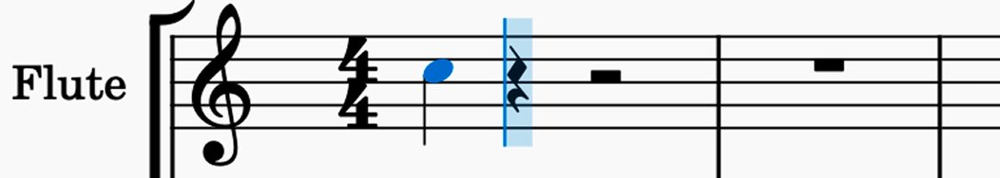

Place Notes and Rests
There are many ways to input notes and rests in MuseScore Studio, including methods involving keyboard shortcuts or MIDI devices. Because this guide is for new users, the method explained below involves no shortcuts and doesn’t require the use of a MIDI device.
- Click on the measure where you want to input notes.

- Enter note input mode by clicking the pen icon. If the pencil turns purple, you have successfully entered note input mode.

- If the pencil turns purple, you have successfully entered note input mode.
- Click on the duration you want to input from the toolbar.
- Hover your cursor over the spot you wish to add the note. Move your cursor up or down to change the pitch of the note.

- Click to confirm placement of the note.
